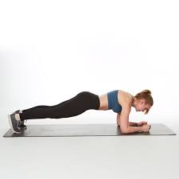

Pilates Hareketleri
Aşağıda yer alan temel pilates hareketleriyle bedenini güçlendir, esnekliğini artır ve zihinsel dengeyle buluş.
Roll Up
Omurgayı tek tek yuvarlayarak güç ve esneklik kazandıran klasik bir pilates hareketidir.
The Hundred
Karın kaslarını aktif hale getiren, nefes kontrolüyle yapılan temel pilates ısınma egzersizidir.
Single Leg Circle
Bacak ve kalça kaslarını çalıştıran, koordinasyonu geliştiren denge egzersizidir.

Plank
Tüm vücudu stabilize eden, karın ve sırt kaslarını güçlendiren dayanıklılık hareketidir.

Swan Dive
Sırt kaslarını esneten ve göğüs kafesini açan, nefesle uyumlu bir omurga germe hareketidir.

The Saw
Omurga rotasyonu ve esneklik kazandıran, denge ve nefes kontrolüyle yapılan bir egzersizdir.